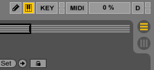

Editing in Ableton Live
Introduction
Hi, I'm Julian from Siegen, Germany.
This website is a lesson for week two of
Introduction To Music Production at Coursera.org
.
It will explain the most important editing tasks in
Ableton Live 9. This lesson is separated into
small parts and can be used as a reference.
Lesson
Overview
Session view
Editing in is done in Live's arrangement view. Make sure to activate it in the top right
corner of the Ableton window:

Clips
Clips, which are also called regions is a reference in Live to an audio file on the hard drive.
You can create one by dragging and audio file form the file browser on the left to the arrangement view
on the right:
Trimming
Per default, the clip will contain the contents of the whole audio file. You can trim the clip
by adjusting it's bounds. 1 This is done by bringing the mouse cursor
to the edge of a clip and then dragging it to the left or right.
Separating
To split a clip into two parts, click on the position you want to split it and then choose press ⌘E:
Consolidating
To consolidate 2 two or more clips select them while holding ⇧ and then press ⌘J:
Coloring and Naming
In order to rename a clip select it and press ⌘R. To choose another color for it, right click on its
title and then choose a color in the context menu:
Crossfading
Live automatically puts in small cross fades for you per default. You can view them by
selecting an audio track and pressing ⎇⌘F. After that, they can be edited with drag and drop.
Reflection
I choose to make a website with small videos for this lesson because I felt this kind of content is
easier to follow in video form than with screenshots. I did not make one long video, because this
format gives it more structure and can be used like a reference.
Footnotes
1: This is also called 'edge editing'.
2: Consolidating is also called 'merging' and is a form of destructive editing.